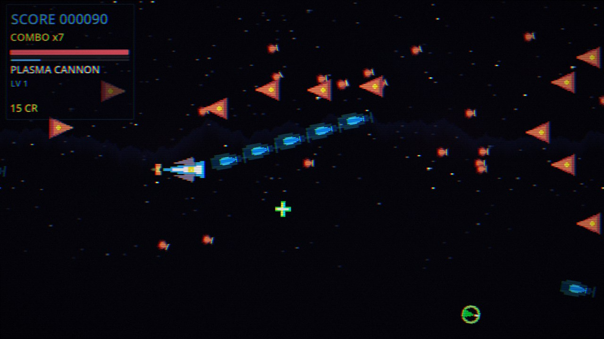
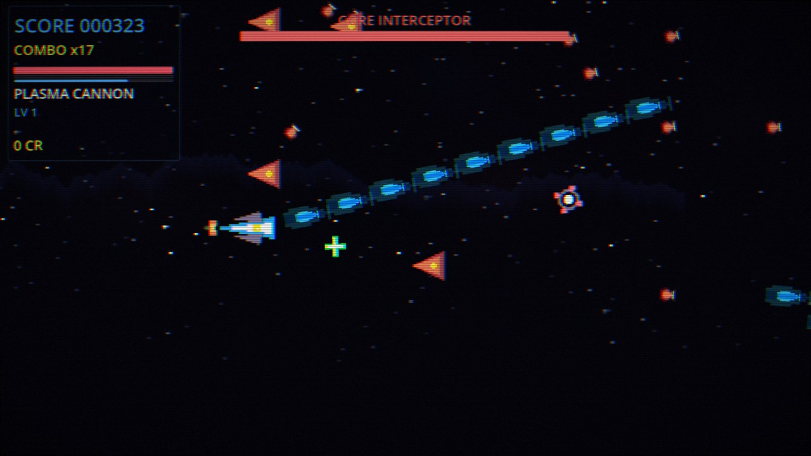
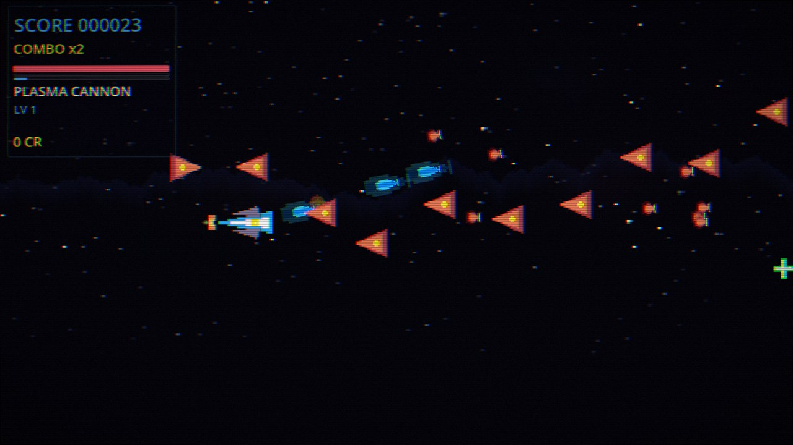
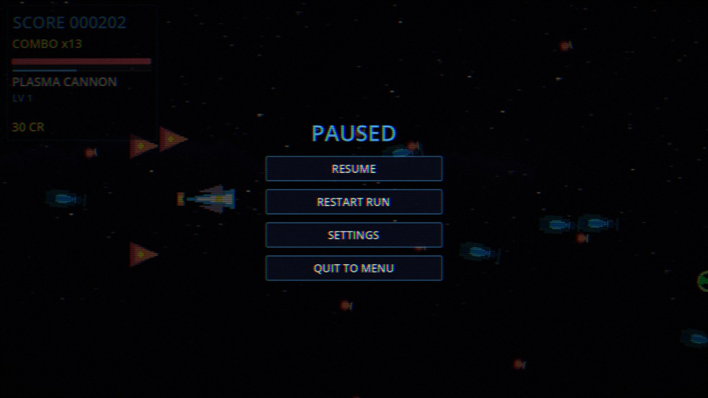
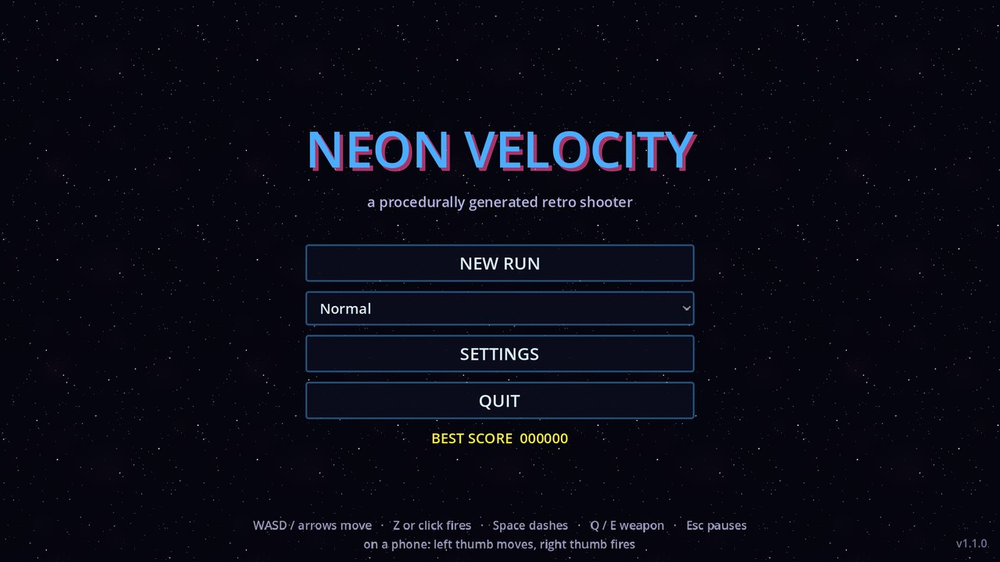

Godot 4.3 · MIT · zero asset files
NEON
VELOCITY
A retro side-scrolling shooter where every sprite is rasterised and every sound is synthesised at runtime. No PNGs, no OGGs, no fonts — the repository is pure code, and the game draws itself the moment it starts.

What's in the game
Six weapons with five levels each, eighteen mods, endless procedural levels and four bosses on a five-chunk cycle.
Six weapons
Plasma cannon, spread shot, laser lance, seeker missiles, railgun and nova burst. Each levels up from kills — XP is earned, not bought.
Eighteen mods
Chain lightning, ricochet, life siphon, MIRV splits, EMP slows, pulsar novas. Picking one pauses the run and offers three cards.
Endless, seeded levels
The world is a strip of 2400-unit chunks generated from seed + chunk index, so a given seed always produces the same run.
Four bosses
Core Interceptor, Void Warden, Neon Titan and The Architect — each with its own patterns and a phase change every quarter of its health.
Nothing to install
Sprites come out of the Image API in a fixed 16-colour palette; sound effects are packed into AudioStreamWAV from float buffers.
Adaptive audio
Four synthesised layers — bass, lead, pad, drums — crossfade as you get deeper into a run, over 24 procedural effects.
Screens
Captured from the web build running in Chromium at 1920×1080. Click any frame for the full-size PNG.









Controls
The same build plays with a keyboard or with two thumbs; the on-screen controls only appear when a touchscreen is present.
Keyboard & mouse
- WASD / arrows
- Move
- Z / left click
- Fire (hold)
- Space / Shift
- Dash — brief invulnerability
- Q / E
- Switch weapon
- Esc
- Pause
Touch
- Left half
- Floating stick — drag anywhere to fly
- FIRE
- Hold to fire
- DASH
- Dash
- WPN
- Next weapon
- Top-right
- Pause
Play in landscape. Portrait shows a rotate prompt, and the first tap on the web build asks for fullscreen.
Get it
Every build is produced by CI on a version tag — web, Linux, Windows and macOS are attached to the same release.
Unsigned binaries. The desktop builds are not code-signed — Windows SmartScreen and macOS Gatekeeper will both ask you to confirm. On macOS, right-click the app and choose Open the first time. The web build needs a keyboard and a desktop-class browser.
How it's built
A Godot 4.3 project with no assets, no network calls and no plugins, plus a pipeline that tests and ships it.
The brief this came from promised a shooter with zero external assets, and the interesting
part is that it is literally true: the repository contains GDScript, three shaders,
five scene files and two tools. Everything you see on screen is generated by
scripts/core/Art.gd at startup — polygons rasterised into an
Image, quantised to a 16-colour CGA-style palette, wrapped in an
ImageTexture.
Audio works the same way. scripts/core/AudioManager.gd synthesises FM tones,
sweeps, noise bursts and arpeggios into float buffers and packs them into 16-bit PCM
AudioStreamWAV resources. The four music layers are 6.857-second loops at 140 BPM
— four bars — mixed live as the run gets deeper.
Systems talk through a signal bus rather than reaching into each other, bullets and enemies are pooled, and the level generator is seeded, so the same seed replays the same chunk layout.
- 01
Runtime art
17 sprite generators — ships, drones, the boss core, pickups, starfield, nebula, mountain ridge. - 02
Runtime audio
24 effects plus four music layers, all synthesised into PCM at startup in well under a second. - 03
Tested in CI
32 headless assertions drive a real run, and a 50-second soak reaches the first boss. Both gate every push. - 04
One command to ship
git tag v1.1.0 && git push --tagsbuilds four platforms and publishes the release.